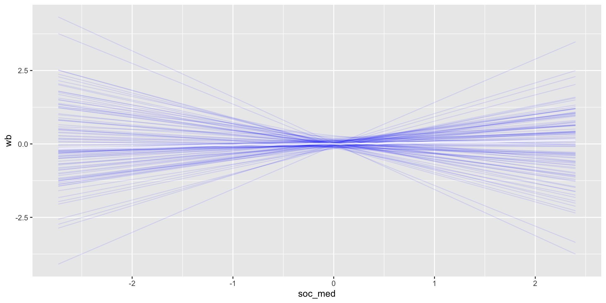
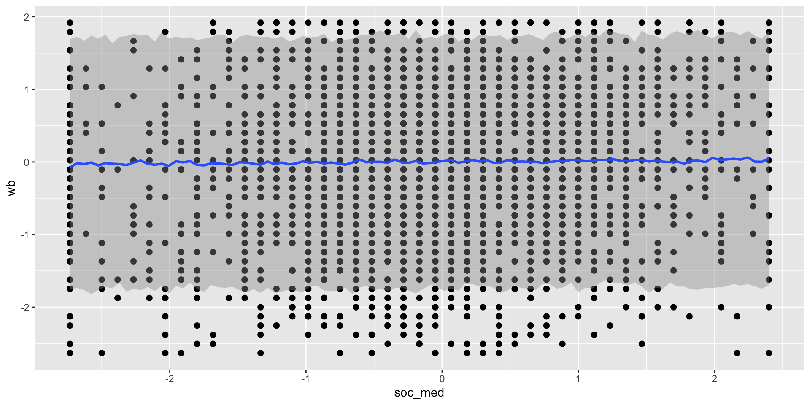

Lab 5: Regression for Causal Inference I
February 18, 2026
Overview
Today, we will learn how to conduct multiple linear regression using brms.
Prior prediction and specification with multiple variables
Fiting the models and analyzing results
Load in the following packages (install if needed):
Relationships among Multiple Variables
Last week, we learned how to do linear regression with one predictor.
This week, we will extend linear regression to have multiple predictors.
Unlike simple linear regression, we now need to consider relationships among multiple variables.
Emerging Adulthood
In lecture, we considered the following model:

If the mediation model is correct then if we include both soc_med and support as predictors of wb, then the coefficient for soc_med should be zero.
Emerging Adulthood
The model we will fit first:
\[\begin{align*} {\sf wb}_i & \sim N(\mu_i, \sigma) \\ \mu_i & = a + bsp \times {\sf support}_i + bsm \times {\sf soc\_med}_i \\ a & \sim \_\_\_ \\ bsp & \sim \_\_\_ \\ bsm & \sim \_\_\_ \\ \sigma & \sim \_\_\_ \\ \end{align*}\]
Load in the Emerging Adulthood data from Blackboard:
Rescaling Variables
Rescaling variables makes prior prediction and model interpretation easier.
Let’s look at the scale of our original variables:
soc_med support wb
Min. : 0.00 Min. : 0.00 Min. :1.000
1st Qu.:29.00 1st Qu.:59.00 1st Qu.:3.500
Median :35.00 Median :69.00 Median :4.667
Mean :34.43 Mean :66.33 Mean :4.470
3rd Qu.:40.00 3rd Qu.:76.00 3rd Qu.:5.500
Max. :55.00 Max. :84.00 Max. :7.000
NA's :1 NA's :1 NA's :2 soc_medis between 0 and 55supportis between 0 and 84wbis between 1 and 7
Rescaling Variables
In lecture, we rescaled these variables to range between 0 and 1.
To broaden our skills, today we will transform our variables into \(z\)-scores with mean 0 and standard deviation 1.
We will also retain only complete cases. We will learn about missing data handling next week.
Prior Prediction
Relevant ideas for choosing priors (some borrowed from lecture):
Data are messy, we want to allow relatively large \(\sigma\) considering the scale of the variables
Want to allow both positive and negative relationships
Relationships may not be very strong
All variables have a mean 0 and standard deviation 1, range from \(\approx\) -3 to +3
Prior Prediction
We may try the following priors:
\(a \sim N(0, .1)\)
We may expect the intercept to be very close to zero
Recall that the intercept must equal zero for OLS regression
\(bsp, bsm \sim N(0, .5)\)
- Allow both positive and negative slopes but without expecting very strong slopes
\(\sigma \sim Exp(1)\)
- This gives \(E(\sigma) = 1\), so that on average, our predictions may be 1 unit off
Prior Prediction
View the prior structure:
Prior Prediction
Sample from the prior:
prior1 <- prior(normal(0, .1), class = "Intercept") +
prior(normal(0, .5), class = "b", coef = "soc_med") +
prior(normal(0, .5), class = "b", coef = "support") +
prior(exponential(1), class = "sigma")
prior_check1 <- brm(wb ~ soc_med + support, d1, prior = prior1,
family = gaussian(link = "identity"), sample_prior = "only")Prior Prediction
Prior Prediction
Now set effect = "..." to plot a specific predictor.
Prior Prediction
Now set effect = "..." to plot a specific predictor.
Prior Prediction
We can also look at the predicted distribution of errors (observed - predicted outcomes, a function of \(\sigma\)) using pp_check:

Fit the Model
At this point, we will move forward with these priors. As always, reasonable people may choose different priors and you may consider tweaking these choices.
SAMPLING FOR MODEL 'anon_model' NOW (CHAIN 1).
Chain 1:
Chain 1: Gradient evaluation took 3.2e-05 seconds
Chain 1: 1000 transitions using 10 leapfrog steps per transition would take 0.32 seconds.
Chain 1: Adjust your expectations accordingly!
Chain 1:
Chain 1:
Chain 1: Iteration: 1 / 2000 [ 0%] (Warmup)
Chain 1: Iteration: 200 / 2000 [ 10%] (Warmup)
Chain 1: Iteration: 400 / 2000 [ 20%] (Warmup)
Chain 1: Iteration: 600 / 2000 [ 30%] (Warmup)
Chain 1: Iteration: 800 / 2000 [ 40%] (Warmup)
Chain 1: Iteration: 1000 / 2000 [ 50%] (Warmup)
Chain 1: Iteration: 1001 / 2000 [ 50%] (Sampling)
Chain 1: Iteration: 1200 / 2000 [ 60%] (Sampling)
Chain 1: Iteration: 1400 / 2000 [ 70%] (Sampling)
Chain 1: Iteration: 1600 / 2000 [ 80%] (Sampling)
Chain 1: Iteration: 1800 / 2000 [ 90%] (Sampling)
Chain 1: Iteration: 2000 / 2000 [100%] (Sampling)
Chain 1:
Chain 1: Elapsed Time: 0.047 seconds (Warm-up)
Chain 1: 0.054 seconds (Sampling)
Chain 1: 0.101 seconds (Total)
Chain 1:
SAMPLING FOR MODEL 'anon_model' NOW (CHAIN 2).
Chain 2:
Chain 2: Gradient evaluation took 8e-06 seconds
Chain 2: 1000 transitions using 10 leapfrog steps per transition would take 0.08 seconds.
Chain 2: Adjust your expectations accordingly!
Chain 2:
Chain 2:
Chain 2: Iteration: 1 / 2000 [ 0%] (Warmup)
Chain 2: Iteration: 200 / 2000 [ 10%] (Warmup)
Chain 2: Iteration: 400 / 2000 [ 20%] (Warmup)
Chain 2: Iteration: 600 / 2000 [ 30%] (Warmup)
Chain 2: Iteration: 800 / 2000 [ 40%] (Warmup)
Chain 2: Iteration: 1000 / 2000 [ 50%] (Warmup)
Chain 2: Iteration: 1001 / 2000 [ 50%] (Sampling)
Chain 2: Iteration: 1200 / 2000 [ 60%] (Sampling)
Chain 2: Iteration: 1400 / 2000 [ 70%] (Sampling)
Chain 2: Iteration: 1600 / 2000 [ 80%] (Sampling)
Chain 2: Iteration: 1800 / 2000 [ 90%] (Sampling)
Chain 2: Iteration: 2000 / 2000 [100%] (Sampling)
Chain 2:
Chain 2: Elapsed Time: 0.047 seconds (Warm-up)
Chain 2: 0.046 seconds (Sampling)
Chain 2: 0.093 seconds (Total)
Chain 2:
SAMPLING FOR MODEL 'anon_model' NOW (CHAIN 3).
Chain 3:
Chain 3: Gradient evaluation took 7e-06 seconds
Chain 3: 1000 transitions using 10 leapfrog steps per transition would take 0.07 seconds.
Chain 3: Adjust your expectations accordingly!
Chain 3:
Chain 3:
Chain 3: Iteration: 1 / 2000 [ 0%] (Warmup)
Chain 3: Iteration: 200 / 2000 [ 10%] (Warmup)
Chain 3: Iteration: 400 / 2000 [ 20%] (Warmup)
Chain 3: Iteration: 600 / 2000 [ 30%] (Warmup)
Chain 3: Iteration: 800 / 2000 [ 40%] (Warmup)
Chain 3: Iteration: 1000 / 2000 [ 50%] (Warmup)
Chain 3: Iteration: 1001 / 2000 [ 50%] (Sampling)
Chain 3: Iteration: 1200 / 2000 [ 60%] (Sampling)
Chain 3: Iteration: 1400 / 2000 [ 70%] (Sampling)
Chain 3: Iteration: 1600 / 2000 [ 80%] (Sampling)
Chain 3: Iteration: 1800 / 2000 [ 90%] (Sampling)
Chain 3: Iteration: 2000 / 2000 [100%] (Sampling)
Chain 3:
Chain 3: Elapsed Time: 0.046 seconds (Warm-up)
Chain 3: 0.049 seconds (Sampling)
Chain 3: 0.095 seconds (Total)
Chain 3:
SAMPLING FOR MODEL 'anon_model' NOW (CHAIN 4).
Chain 4:
Chain 4: Gradient evaluation took 8e-06 seconds
Chain 4: 1000 transitions using 10 leapfrog steps per transition would take 0.08 seconds.
Chain 4: Adjust your expectations accordingly!
Chain 4:
Chain 4:
Chain 4: Iteration: 1 / 2000 [ 0%] (Warmup)
Chain 4: Iteration: 200 / 2000 [ 10%] (Warmup)
Chain 4: Iteration: 400 / 2000 [ 20%] (Warmup)
Chain 4: Iteration: 600 / 2000 [ 30%] (Warmup)
Chain 4: Iteration: 800 / 2000 [ 40%] (Warmup)
Chain 4: Iteration: 1000 / 2000 [ 50%] (Warmup)
Chain 4: Iteration: 1001 / 2000 [ 50%] (Sampling)
Chain 4: Iteration: 1200 / 2000 [ 60%] (Sampling)
Chain 4: Iteration: 1400 / 2000 [ 70%] (Sampling)
Chain 4: Iteration: 1600 / 2000 [ 80%] (Sampling)
Chain 4: Iteration: 1800 / 2000 [ 90%] (Sampling)
Chain 4: Iteration: 2000 / 2000 [100%] (Sampling)
Chain 4:
Chain 4: Elapsed Time: 0.046 seconds (Warm-up)
Chain 4: 0.052 seconds (Sampling)
Chain 4: 0.098 seconds (Total)
Chain 4: Summarize Model Results
Family: gaussian
Links: mu = identity
Formula: wb ~ soc_med + support
Data: d1 (Number of observations: 3131)
Draws: 4 chains, each with iter = 2000; warmup = 1000; thin = 1;
total post-warmup draws = 4000
Regression Coefficients:
Estimate Est.Error l-95% CI u-95% CI Rhat Bulk_ESS Tail_ESS
Intercept 0.00 0.02 -0.03 0.03 1.00 4464 2678
soc_med 0.01 0.02 -0.02 0.04 1.00 4136 2977
support 0.47 0.02 0.43 0.50 1.00 4138 3168
Further Distributional Parameters:
Estimate Est.Error l-95% CI u-95% CI Rhat Bulk_ESS Tail_ESS
sigma 0.88 0.01 0.86 0.91 1.00 4174 2716
Draws were sampled using sampling(NUTS). For each parameter, Bulk_ESS
and Tail_ESS are effective sample size measures, and Rhat is the potential
scale reduction factor on split chains (at convergence, Rhat = 1).Counterfactuals

Counterfactuals
Mediation Models
To fully test our DAG, we should fit a mediation model, which model modifies the previous model by simultaneously estimating the effect of soc_med on support.
\[\begin{align*} {\sf wb}_i & \sim N(\mu_{1i}, \sigma_1) \\ \mu_{1i} & = a_1 + bsp \times {\sf support}_i + \\ & bsm_1 \times {\sf soc\_med}_i \\ a_1 & \sim N(0, .1) \\ bsp & \sim N(0, .5) \\ bsm_1 & \sim N(0, .5) \\ \sigma_1 & \sim Exp(1) \end{align*}\]
\[\begin{align*} {\sf support}_i & \sim N(\mu_{2i}, \sigma_2) \\ \mu_{2i} & = a_2 + bsm_2 \times {\sf soc\_med}_i \\ a_2 & \sim N(0, .1) \\ bsm_2 & \sim N(0, .5) \\ \sigma_2 & \sim Exp(1) \\ \end{align*}\]
For simplicity, we will use the same priors as for the multiple regression model, but we could do more prior predictive simulation if desired.
Mediation Models
When testing a mediated model, we use multiple equations to define the relationship. In brms, we can do this using the bf function.
Put each regression within
bf(), separated by+set_rescor(FALSE)means to not estimate the correlation among residuals, which we don’t want for this model.
Model formula:
Mediation Models
prior class coef group resp dpar nlpar lb ub tag
(flat) b support
(flat) b soc_med support
student_t(3, 0.2, 2.5) Intercept support
student_t(3, 0, 2.5) sigma support 0
(flat) b wb
(flat) b soc_med wb
(flat) b support wb
student_t(3, 0.1, 2.5) Intercept wb
student_t(3, 0, 2.5) sigma wb 0
source
default
(vectorized)
default
default
default
(vectorized)
(vectorized)
default
defaultMediation Models
In this case, we must specify priors for each response variable separately using the resp argument.
brm_prior_2 <- prior(normal(0, .1), class = "Intercept", resp = "wb") +
prior(normal(0, .5), class = "b", resp = "wb") +
prior(exponential(1), class = "sigma", resp = "wb") +
prior(normal(0, .1), class = "Intercept", resp = "support") +
prior(normal(0, .5), class = "b", resp = "support") +
prior(exponential(1), class = "sigma", resp = "support")Mediation Models
Mediation Models
Let’s interpret this output together.
Family: MV(gaussian, gaussian)
Links: mu = identity
mu = identity
Formula: wb ~ support + soc_med
support ~ soc_med
Data: d1 (Number of observations: 3131)
Draws: 4 chains, each with iter = 2000; warmup = 1000; thin = 1;
total post-warmup draws = 4000
Regression Coefficients:
Estimate Est.Error l-95% CI u-95% CI Rhat Bulk_ESS Tail_ESS
wb_Intercept 0.00 0.02 -0.03 0.03 1.00 5531 2936
support_Intercept -0.00 0.02 -0.03 0.03 1.00 6221 2969
wb_support 0.47 0.02 0.43 0.50 1.00 5670 3091
wb_soc_med 0.01 0.02 -0.02 0.04 1.00 5432 3086
support_soc_med 0.21 0.02 0.18 0.25 1.00 5440 3053
Further Distributional Parameters:
Estimate Est.Error l-95% CI u-95% CI Rhat Bulk_ESS Tail_ESS
sigma_wb 0.88 0.01 0.86 0.91 1.00 6062 3233
sigma_support 0.98 0.01 0.95 1.00 1.00 5444 2919
Draws were sampled using sampling(NUTS). For each parameter, Bulk_ESS
and Tail_ESS are effective sample size measures, and Rhat is the potential
scale reduction factor on split chains (at convergence, Rhat = 1).Handling Categorical Predictors
When predictors are categorical, we can use an index variable approach. This often involves treating the variables as nonlinear parameters to set distinct priors for each group.
sex soc_med support wb
female:2279 Min. :-2.7313 Min. :-4.8823 Min. :-2.6340
male : 770 1st Qu.:-0.6349 1st Qu.:-0.5430 1st Qu.:-0.7372
other : 53 Median : 0.0639 Median : 0.1924 Median : 0.1480
Mean : 0.0000 Mean : 0.0000 Mean : 0.0000
3rd Qu.: 0.6462 3rd Qu.: 0.7073 3rd Qu.: 0.7803
Max. : 2.3932 Max. : 1.2956 Max. : 1.9184 Handling Categorical Predictors
Now, we want to estimate separate intercepts for each reported category of sex.
Make sure that
sexis coded as a factor variable before fitting.The code
0 +means to not estimate an overall intercept.
Now, intercepts are indicated by class = b rather than class = Intercept:
prior class coef group resp dpar nlpar lb ub tag
(flat) b support
(flat) b sexfemale support
(flat) b sexmale support
(flat) b sexother support
(flat) b soc_med support
student_t(3, 0, 2.5) sigma support 0
(flat) b wb
(flat) b sexfemale wb
(flat) b sexmale wb
(flat) b sexother wb
(flat) b soc_med wb
(flat) b support wb
student_t(3, 0, 2.5) sigma wb 0
source
default
(vectorized)
(vectorized)
(vectorized)
(vectorized)
default
default
(vectorized)
(vectorized)
(vectorized)
(vectorized)
(vectorized)
defaultHandling Categorical Predictors
Now, we want a broader prior on the intercepts to allow for mean differences among the sexes. We’ll use \(N(0, .2)\).
brm_prior_3 <- prior(normal(0, .2), class = "b", coef = "sexfemale", resp = "wb") +
prior(normal(0, .2), class = "b", coef = "sexmale", resp = "wb") +
prior(normal(0, .2), class = "b", coef = "sexother", resp = "wb") +
prior(normal(0, .5), class = "b", coef = "soc_med", resp = "wb") +
prior(normal(0, .5), class = "b", coef = "support", resp = "wb") +
prior(exponential(1), class = "sigma", resp = "wb") +
prior(normal(0, .2), class = "b", coef = "sexfemale", resp = "support") +
prior(normal(0, .2), class = "b", coef = "sexmale", resp = "support") +
prior(normal(0, .2), class = "b", coef = "sexother", resp = "support") +
prior(normal(0, .5), class = "b", coef = "soc_med", resp = "support") +
prior(exponential(1), class = "sigma", resp = "support")Handling Categorical Predictors
SAMPLING FOR MODEL 'anon_model' NOW (CHAIN 1).
Chain 1:
Chain 1: Gradient evaluation took 5.4e-05 seconds
Chain 1: 1000 transitions using 10 leapfrog steps per transition would take 0.54 seconds.
Chain 1: Adjust your expectations accordingly!
Chain 1:
Chain 1:
Chain 1: Iteration: 1 / 2000 [ 0%] (Warmup)
Chain 1: Iteration: 200 / 2000 [ 10%] (Warmup)
Chain 1: Iteration: 400 / 2000 [ 20%] (Warmup)
Chain 1: Iteration: 600 / 2000 [ 30%] (Warmup)
Chain 1: Iteration: 800 / 2000 [ 40%] (Warmup)
Chain 1: Iteration: 1000 / 2000 [ 50%] (Warmup)
Chain 1: Iteration: 1001 / 2000 [ 50%] (Sampling)
Chain 1: Iteration: 1200 / 2000 [ 60%] (Sampling)
Chain 1: Iteration: 1400 / 2000 [ 70%] (Sampling)
Chain 1: Iteration: 1600 / 2000 [ 80%] (Sampling)
Chain 1: Iteration: 1800 / 2000 [ 90%] (Sampling)
Chain 1: Iteration: 2000 / 2000 [100%] (Sampling)
Chain 1:
Chain 1: Elapsed Time: 0.14 seconds (Warm-up)
Chain 1: 0.126 seconds (Sampling)
Chain 1: 0.266 seconds (Total)
Chain 1:
SAMPLING FOR MODEL 'anon_model' NOW (CHAIN 2).
Chain 2:
Chain 2: Gradient evaluation took 1.6e-05 seconds
Chain 2: 1000 transitions using 10 leapfrog steps per transition would take 0.16 seconds.
Chain 2: Adjust your expectations accordingly!
Chain 2:
Chain 2:
Chain 2: Iteration: 1 / 2000 [ 0%] (Warmup)
Chain 2: Iteration: 200 / 2000 [ 10%] (Warmup)
Chain 2: Iteration: 400 / 2000 [ 20%] (Warmup)
Chain 2: Iteration: 600 / 2000 [ 30%] (Warmup)
Chain 2: Iteration: 800 / 2000 [ 40%] (Warmup)
Chain 2: Iteration: 1000 / 2000 [ 50%] (Warmup)
Chain 2: Iteration: 1001 / 2000 [ 50%] (Sampling)
Chain 2: Iteration: 1200 / 2000 [ 60%] (Sampling)
Chain 2: Iteration: 1400 / 2000 [ 70%] (Sampling)
Chain 2: Iteration: 1600 / 2000 [ 80%] (Sampling)
Chain 2: Iteration: 1800 / 2000 [ 90%] (Sampling)
Chain 2: Iteration: 2000 / 2000 [100%] (Sampling)
Chain 2:
Chain 2: Elapsed Time: 0.145 seconds (Warm-up)
Chain 2: 0.119 seconds (Sampling)
Chain 2: 0.264 seconds (Total)
Chain 2:
SAMPLING FOR MODEL 'anon_model' NOW (CHAIN 3).
Chain 3:
Chain 3: Gradient evaluation took 1.6e-05 seconds
Chain 3: 1000 transitions using 10 leapfrog steps per transition would take 0.16 seconds.
Chain 3: Adjust your expectations accordingly!
Chain 3:
Chain 3:
Chain 3: Iteration: 1 / 2000 [ 0%] (Warmup)
Chain 3: Iteration: 200 / 2000 [ 10%] (Warmup)
Chain 3: Iteration: 400 / 2000 [ 20%] (Warmup)
Chain 3: Iteration: 600 / 2000 [ 30%] (Warmup)
Chain 3: Iteration: 800 / 2000 [ 40%] (Warmup)
Chain 3: Iteration: 1000 / 2000 [ 50%] (Warmup)
Chain 3: Iteration: 1001 / 2000 [ 50%] (Sampling)
Chain 3: Iteration: 1200 / 2000 [ 60%] (Sampling)
Chain 3: Iteration: 1400 / 2000 [ 70%] (Sampling)
Chain 3: Iteration: 1600 / 2000 [ 80%] (Sampling)
Chain 3: Iteration: 1800 / 2000 [ 90%] (Sampling)
Chain 3: Iteration: 2000 / 2000 [100%] (Sampling)
Chain 3:
Chain 3: Elapsed Time: 0.14 seconds (Warm-up)
Chain 3: 0.124 seconds (Sampling)
Chain 3: 0.264 seconds (Total)
Chain 3:
SAMPLING FOR MODEL 'anon_model' NOW (CHAIN 4).
Chain 4:
Chain 4: Gradient evaluation took 1.6e-05 seconds
Chain 4: 1000 transitions using 10 leapfrog steps per transition would take 0.16 seconds.
Chain 4: Adjust your expectations accordingly!
Chain 4:
Chain 4:
Chain 4: Iteration: 1 / 2000 [ 0%] (Warmup)
Chain 4: Iteration: 200 / 2000 [ 10%] (Warmup)
Chain 4: Iteration: 400 / 2000 [ 20%] (Warmup)
Chain 4: Iteration: 600 / 2000 [ 30%] (Warmup)
Chain 4: Iteration: 800 / 2000 [ 40%] (Warmup)
Chain 4: Iteration: 1000 / 2000 [ 50%] (Warmup)
Chain 4: Iteration: 1001 / 2000 [ 50%] (Sampling)
Chain 4: Iteration: 1200 / 2000 [ 60%] (Sampling)
Chain 4: Iteration: 1400 / 2000 [ 70%] (Sampling)
Chain 4: Iteration: 1600 / 2000 [ 80%] (Sampling)
Chain 4: Iteration: 1800 / 2000 [ 90%] (Sampling)
Chain 4: Iteration: 2000 / 2000 [100%] (Sampling)
Chain 4:
Chain 4: Elapsed Time: 0.144 seconds (Warm-up)
Chain 4: 0.123 seconds (Sampling)
Chain 4: 0.267 seconds (Total)
Chain 4: Handling Categorical Predictors
Family: MV(gaussian, gaussian)
Links: mu = identity
mu = identity
Formula: wb ~ 0 + sex + support + soc_med
support ~ 0 + sex + soc_med
Data: d2 (Number of observations: 3102)
Draws: 4 chains, each with iter = 2000; warmup = 1000; thin = 1;
total post-warmup draws = 4000
Regression Coefficients:
Estimate Est.Error l-95% CI u-95% CI Rhat Bulk_ESS Tail_ESS
wb_sexfemale -0.02 0.02 -0.06 0.02 1.00 7849 3213
wb_sexmale 0.08 0.03 0.02 0.15 1.00 8538 2990
wb_sexother -0.29 0.10 -0.49 -0.08 1.00 7964 2940
wb_support 0.46 0.02 0.43 0.50 1.00 7147 3010
wb_soc_med 0.01 0.02 -0.02 0.05 1.00 6569 3267
support_sexfemale 0.03 0.02 -0.01 0.07 1.00 7304 3137
support_sexmale -0.07 0.03 -0.13 0.00 1.00 8084 3265
support_sexother -0.28 0.12 -0.51 -0.06 1.00 8204 2891
support_soc_med 0.21 0.02 0.17 0.24 1.00 7282 3368
Further Distributional Parameters:
Estimate Est.Error l-95% CI u-95% CI Rhat Bulk_ESS Tail_ESS
sigma_wb 0.88 0.01 0.86 0.90 1.00 7373 3061
sigma_support 0.98 0.01 0.95 1.00 1.00 8819 3125
Draws were sampled using sampling(NUTS). For each parameter, Bulk_ESS
and Tail_ESS are effective sample size measures, and Rhat is the potential
scale reduction factor on split chains (at convergence, Rhat = 1).Activity
In this lab, we fit 3 different brms models.
Multiple linear regression with 2 continuous predictors
Simple mediation with continuous predictor and mediator
Mediation with a categorical covariate
Activity
Tasks:
Run the code to fit each model on your own computer.
Visualize the results from each model using the code from this week and last. Feel free to explore other options.
plot(conditional_effects(...)): now use the fitted model rather than the priors-only modelUse both
method = "posterior_linpred"andmethod = "posterior_predict"Set
effect = "..."to put a specific IV on the \(x\) axisSet
conditions = list(... = #)to plot results conditional on a specific value of another predictorSet
resp = "..."to plot the effect for a specific outcome (response) ariable
pp_check(..., type = "...")- Try
type = "scatter_avg", ndraws = 100
- Try
- For each plot, talk through with the TA and/or a classmate how to interpret the results.